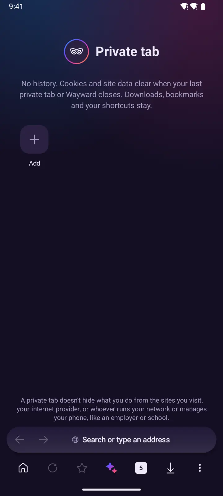
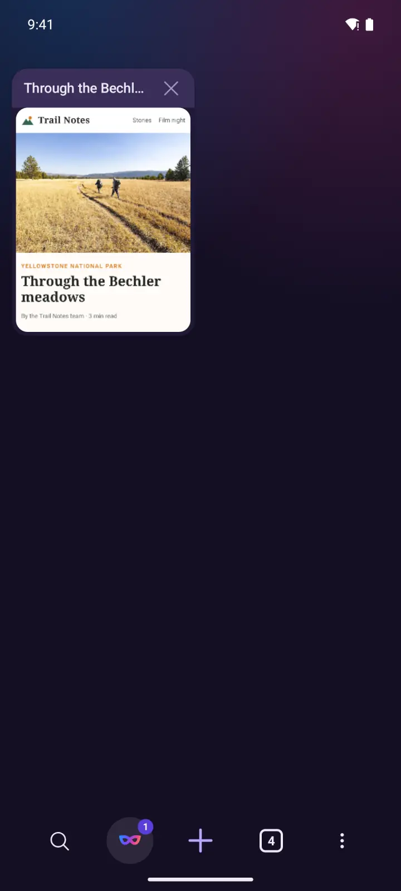
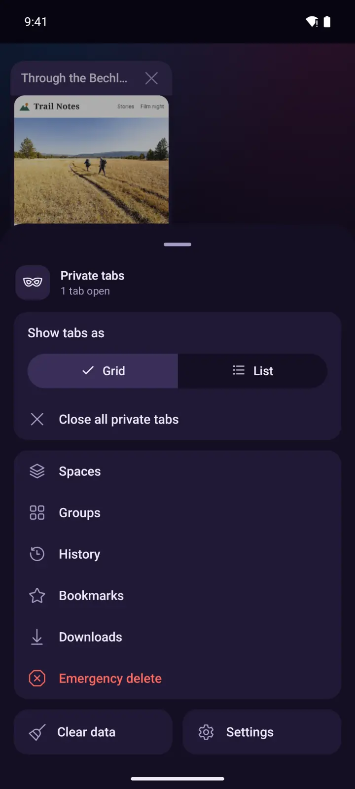
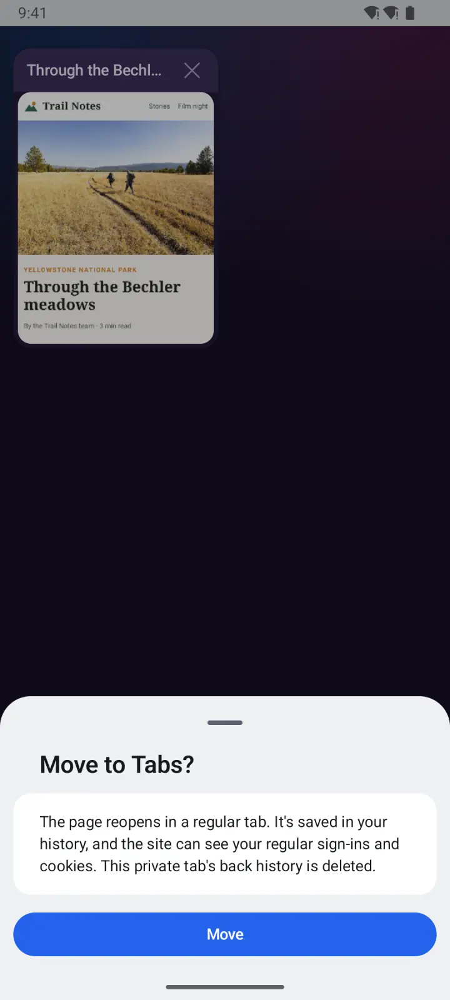
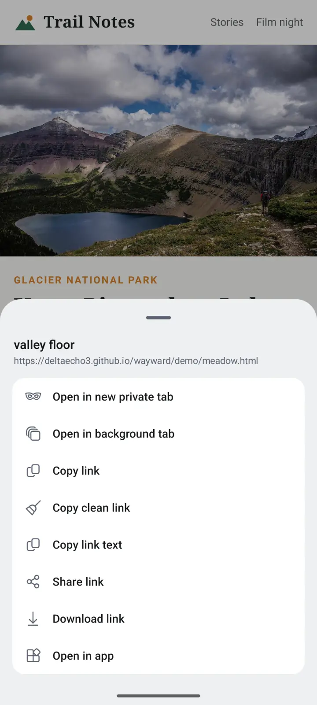
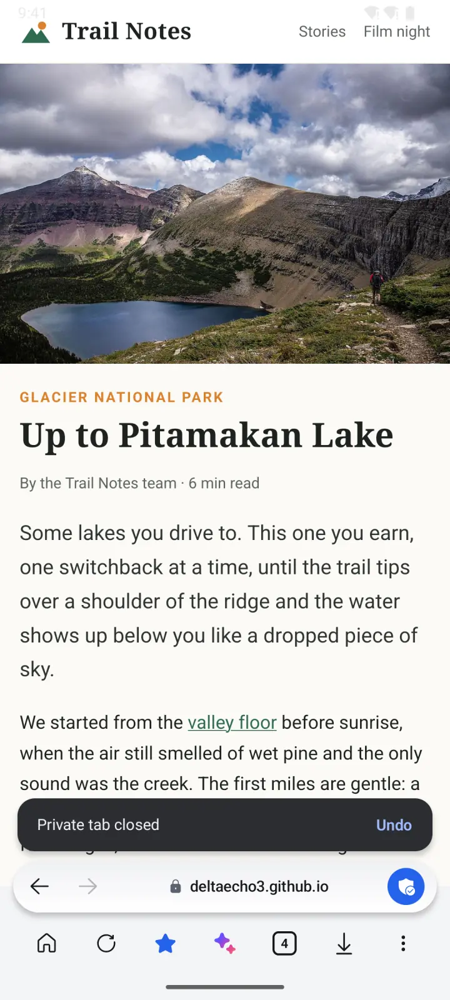

Use private tabs
How-to
Private tabs save no history. Wayward clears their cookies and site data when you close the last private tab, or when Wayward closes. Use one when you don't want a visit remembered on your phone, or to sign in to a site as someone else for a moment.
Open a private tab
Any of these opens one:
- the ⋮ menu's New private tab,
- the start page's Private tab button,
- holding the Tabs button on the bar, then New private tab,
- on the Tabs screen, the mask on the bar. It opens a new private tab in a circle growing from the mask, or takes you to the empty private tab you already had open.
Private tabs are locked behind your phone's unlock to start with: see "The private tabs lock" below.

A private tab is easy to tell apart. Its start page is indigo, with the mask and Private tab, and says what's kept: No history. Cookies and site data clear when your last private tab or Wayward closes. Downloads, bookmarks and your shortcuts stay. The strip behind the clock turns indigo too, and the Tabs button on the bar is filled in. Your own start page shortcuts are there, with the + tile, but never your most visited sites.
At the bottom it reminds you: a private tab doesn't hide what you do from the sites you visit, your internet provider, or whoever runs your network or manages your phone, like an employer or school.
See your private tabs
From a private tab, tap the Tabs button. The Tabs screen opens on its private side: your private tabs apart from the regular ones, indigo to the edges. Tap the tab count on its bar to go back to your regular tabs, which open in a circle growing from it.
On the regular side, the mask shows how many private tabs you have open, in purple. It hides the number while your private tabs are locked.

The private side's ⋮ menu has a Private tabs header with their count, and Close all private tabs, which closes every one of them (pinned ones too) and so ends private browsing.

Move a page between private and regular
- In a regular tab's menu on the Tabs screen (hold its card), Move to private tab asks Move to a private tab? first. The page reopens in a private tab, where you won't be signed in, and the regular tab's back history and saved copy are deleted.
- In a private tab's menu, Move to Tabs asks Move to Tabs?. The page reopens in a regular tab, where it's saved in your history and the site can see your regular sign-ins and cookies.
Tap Move to go ahead.

What's different in a private tab
- No history, and no suggestions from your search engine while you type.
- Holding a link opens it in private tabs only, and there's no Ask AI. The assistant doesn't work in private tabs at all.
- Screenshots and screen recording are blocked while private tabs are showing, unless you change Screenshots in Settings > Shields & Privacy.
- In your phone's recent apps, Wayward shows blurred while a private tab is open (or blank, with Hide in recent apps on, as it is to start with).
- Downloads from a private tab stay inside Wayward, marked with a mask, and a download that's still going carries on after you close your last private tab.
- Bookmarks and start page shortcuts you make in a private tab stay.
- Closing one says Private tab closed, with Undo.


The private tabs lock
Lock private tabs in Settings > Tabs and History is on to start with, as long as your phone has a screen lock. While it's on, every way into private tabs asks for your fingerprint, face or PIN first, even when no private tab is open yet:
- the mask on the Tabs screen, and + on its private side, ask before the tab opens,
- the menu's New private tab and the start page's Private tab button open the tab behind the lock and ask there,
- with Private by default on, Wayward asks when it starts.
One unlock opens all of them. They lock again as Locked tabs lock again says (right away, or 30 seconds after you leave them), and a minute after you leave Wayward. Locked, a private tab and the private side of the Tabs screen show Private tabs are locked with Unlock. See locks.
Private by default
Turn on Settings > Tabs and History > Private by default and links from other apps, and the tab Wayward starts with, open as private tabs. Link previews from other apps stay regular pages.
More in Privacy & security
- Lock Wayward down
- See what was blocked, and let a broken site through
- Choose how much Wayward blocks
- Hide pop-ups and overlays on pages
- Secure connections, Secure DNS and the other privacy settings
- Camera, notifications and other site permissions
- Keep sign-ins apart with spaces
- Lock a tab, your private tabs, a space or Downloads
- Clear data, Shred a site, or delete everything